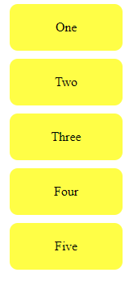
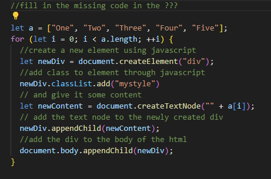
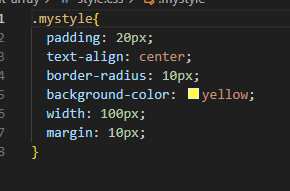

Week 6 Development Blog
What I learnt in Week 6:
- Recap of javascript learnt in Week 5
- More in-depth into javascript basics
- Learnt about variables, statements, data types
- Learnt about logical operators
- Learnt about applying for/while loops
- Learnt about functions and array indexing
- Learnt about objet orientated programming in JS, using var, let, const
Variables, Statements, Data Types:
In programming, variables are used to store and manipulate data.
Statements are individual instructions, and data types define the kind of values a variable can hold (e.g., numbers, strings).
These basics are fundamental for any programming language as they form the building blocks of code.
Logical Operators:
Logical operators (such as AND, OR, NOT) are used to perform logical operations on boolean values.
They are crucial for making decisions and controlling the flow of a program based on certain conditions.
Understanding logical operators enhances the ability to create more complex and flexible algorithms.
For/While Loops:
Loops are structures that allow the execution of a set of statements repeatedly.
"For" loops are typically used when the number of iterations is known in advance, while "While" loops are used when the number of iterations depends on a condition.
Mastery of loops is essential for efficient and dynamic code execution.
Functions and Array Indexing:
Functions are reusable blocks of code that perform a specific task, promoting modular and organized programming.
Array indexing involves accessing elements within an array by their position.
This knowledge is crucial for managing and manipulating data efficiently, especially when working with large datasets or collections of information.
Here are some images of the code I wrote for the exercises!



Object-Oriented Programming (OOP) in JavaScript using var, let, const:
Object-Oriented Programming is a paradigm that uses objects to organize and structure code.
In JavaScript, "var," "let," and "const" are used to declare variables with different scopes and mutability.
Understanding OOP and variable declaration in JavaScript is essential for building scalable
and maintainable applications, promoting code reusability and structure.